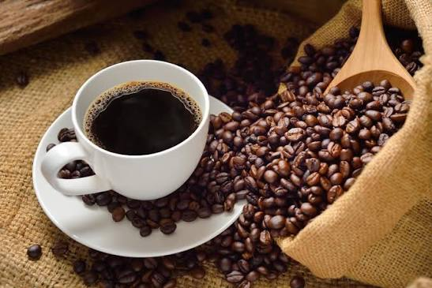

Conheça nossos produtos
Café especial
Grãos selecionados com aroma intenso e sabor equilibrado para começar bem o seu dia.
Café artesanal
Preparado com cuidado para preservar todas as características e a qualidade do café.

Kit Cafefiot
Uma seleção especial para presentear ou aproveitar momentos deliciosos em casa.
Nossa História ☕🌿
A História do Café
O café faz parte da rotina de milhões de pessoas ao redor do mundo. Sua história começou há muitos séculos, quando os primeiros grãos foram descobertos nas montanhas da Etiópia. Com o passar do tempo, a bebida conquistou diferentes culturas, atravessou continentes e se tornou um símbolo de encontro, conversa e momentos especiais.
Inspirada nessa tradição, a Cafefiot nasceu com o propósito de oferecer mais do que uma simples xícara de café: um ambiente acolhedor, onde cada pessoa pode desfrutar de sabores únicos e viver momentos inesquecíveis.
Trabalhamos com grãos selecionados e preparados com carinho para garantir qualidade em cada bebida. Seja um café expresso, um cappuccino ou um café especial, cada gole é preparado para proporcionar uma experiência marcante.
Na Cafefiot, acreditamos que um bom café aproxima pessoas, inspira conversas e torna qualquer momento mais especial. Venha conhecer nossa cafeteria e faça parte da nossa história.
Localização
Venha nos visitar
Cafefiot
Av. Paulista, 1234 - Bela Vista
São Paulo - SP
Aberto de segunda a domingo, das 07h às 22h